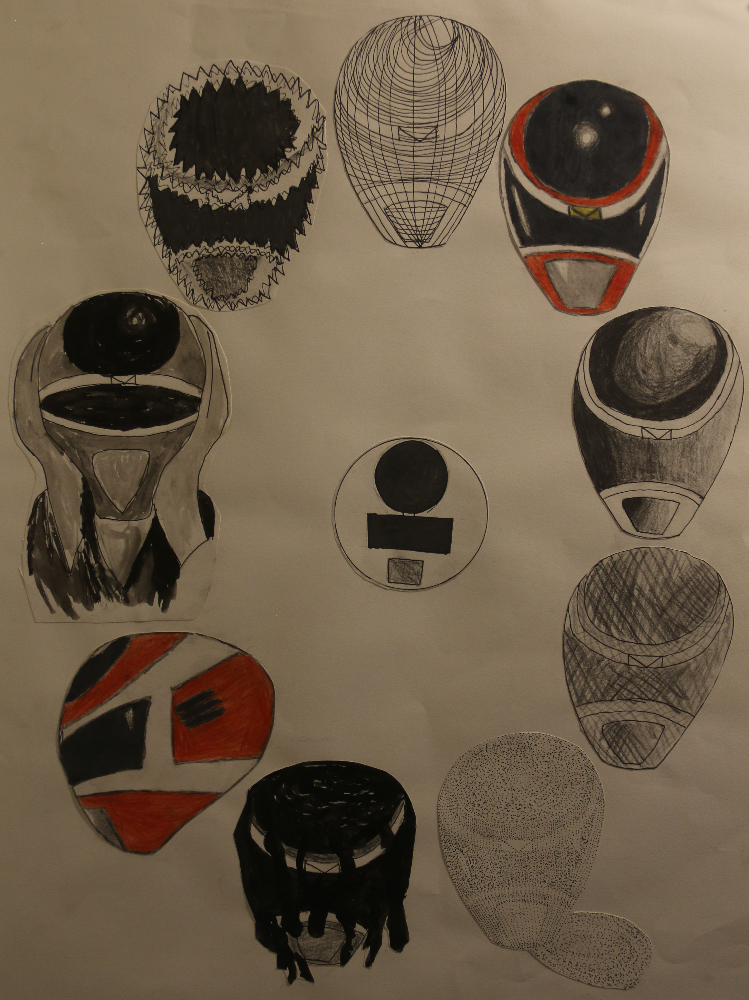

OTHER WORKS
Mega Red Alterations
18" x 24"
Medium: Bristol Board, Pen, Color Pencils and Gouache Paint
Overall, one of my favorite pieces. For this I made different variations/alterations of an object, which happens to be the Red Power Ranger In Space Helmet "Mega Red." The variations were each made individually in bristol board with micron pen, gouache paints, colored pencils, and pencil; They were then carefully cut and placed on drawing paper. Variations made were: side view, dotted, lines, melted, shaded, geometric shapes only, noise and one that imitates a certain piece by a certain artist...

Seed Packets
Medium: Adobe Illustrator
These are some seed packets I made using Illustrator. There's two versions: the first set has small vegetables in the background of the respective vegetable and the second one doesn’t, one of the reasons being because I felt my designs needed some space to breathe.

VERSION 2

Cyan Wood Sword
9" x 20'5"
Medium: Wood
For this piece, the goal was to make a piece that “contains, displays, or stores something” from a semi medium piece of wood. Many people made boxes, but me being the gamer I am, I made a Sword that displays trading cards. It certainly got some attention.